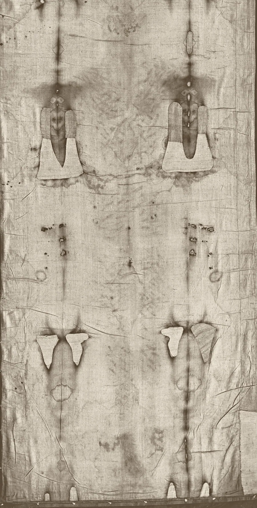

상처, 그리고 복음서의 기록
천 위의 번호나 목록의 상처를 누르십시오. 각 자국을 법의병리학자들이 묘사하는 방식대로 설명하고, 해당하는 복음서 구절과, 있는 경우 회의론자의 메모를 함께 보여 드립니다.


로마의 십자가 처형은 모욕을 주기 위한 공개 처형이었습니다. 복음서는 여기서 중요한 그 처형을 담담하고 자세하게 묘사합니다. 이 천은 같은 특징을 지닌 처형을 기록하고 있으며, 그중에는 중세 미술이 잘못 그린 특징도 있습니다.
이마의 찔린 상처에서 흐른 피
찔린 지점들에서 여러 줄기의 피가 이마를 따라 흘러내립니다. 그중 한 줄기는 숫자 3 모양(흔히 엡실론이라 부름)인데, 버클린은 이를 피가 피부 주름을 따라 흐른 결과로 설명합니다.
군병들이 가시로 면류관을 엮어 그의 머리에 씌우고 자색 옷을 입히고
Bucklin, Viewpoint of a Forensic Pathologist · Bucklin, Autopsy on the Man of the Shroud
얼굴 부상
버클린은 오른쪽 뺨의 부기, 반쯤 감긴 오른쪽 눈, 약간 휜 코, 코끝의 찰과상을 보고합니다. 반면 베빌라쿠아와 다리엔초는 오른쪽 눈이 신경 손상으로 움푹 꺼졌다고 묘사합니다.
그에게 침 뱉고 갈대를 빼앗아 그의 머리를 치더라
Bucklin, Viewpoint of a Forensic Pathologist · Bevilacqua·D'Arienzo 2015, MATEC 36:03003
코의 긁힌 자국과 흙
버클린은 코 부위의 긁힌 자국과 흙을 묘사하는데, 넘어지면서 얼굴이 땅에 부딪힌 것과 들어맞습니다. 처형장으로 가는 길에 넘어졌다는 이야기는 전승이지 복음서의 내용이 아닙니다.
Bucklin, Viewpoint of a Forensic Pathologist · Nitowski 1986
처진 오른쪽 어깨
베빌라쿠아와 다리엔초는 오른쪽 어깨가 약 15도 처져 있다고 보고하고, 이를 오른쪽 위팔뼈의 탈구로 해석합니다. 아마 가로대를 지고 가다 넘어져서 생겼을 것이라고 봅니다.
Bevilacqua·D'Arienzo 2015, MATEC 36:03003 · Bevilacqua, Fanti, D'Arienzo 2017, Open Journal of Trauma
손목의 못 상처
왼손 등의 혈흔은 손목 쪽에 있고, 거기서 약 10도 차이가 나는 두 줄기의 피가 흘러나옵니다. 버클린은 팔이 약 65도 들려 있었고 남자가 자세를 바꾸었다고 계산합니다. 바르베는 못의 위치를 손목의 데스토 공간으로 보았고, 주기브는 못이 손바닥 윗부분으로 들어가 손목으로 나왔다고 주장합니다.
내가 그 손의 못자국을 보며 내 손가락을 그 못자국에 넣으며 내 손을 그 옆구리에 넣어 보지 않고는 믿지 아니하겠노라
Bucklin, Autopsy on the Man of the Shroud · Zugibe 1995, Pierre Barbet Revisited
보이지 않는 엄지
각 손에 손가락이 넷만 보입니다. 바르베와 버클린은 신경 손상으로 엄지가 손바닥 안으로 당겨졌기 때문이라고 설명하고, 주기브는 엄지가 그냥 집게손가락 앞에 놓여 천에 닿지 않았다고 말합니다.
Zugibe 1995, Pierre Barbet Revisited · Bucklin, Autopsy on the Man of the Shroud
아래팔을 따라 흐른 피
피가 손목에서 아래팔을 따라 팔꿈치 쪽으로 흐릅니다. 피를 흘리는 동안 팔이 머리 위로 들려 있었다면 예상되는 모습입니다.
저희가 거기서 예수를 십자가에 못 박을새 다른 두 사람도 그와 함께 좌우편에 못 박으니 예수는 가운데 있더라
Borrini·Garlaschelli, J. Forensic Sciences · Bucklin, Autopsy on the Man of the Shroud
피와 맑은 액체가 나온 옆구리 상처
가장 큰 혈흔은 오른쪽 가슴에 있고, 그 위쪽 가장자리에 타원형 피부 상처가 있습니다. 버클린은 맑은 물 같은 액체가 섞인 피를 보고, 심부전으로 생긴 흉막액일 수 있다고 봅니다. 베빌라쿠아와 다리엔초는 상처가 여섯째 갈비뼈 사이 공간에 있고 폭이 약 4.5 cm라고 봅니다.
그 중 한 군병이 창으로 옆구리를 찌르니 곧 피와 물이 나오더라
Bucklin, Viewpoint of a Forensic Pathologist · Bevilacqua·D'Arienzo 2015, MATEC 36:03003
채찍 자국 (앞면)
비슷한 짝 자국이 가슴과 다리 앞쪽에도 나타나며, 등 쪽에서 감아 돌아온 모양입니다. 버클린은 위팔과 아래팔에는 이 자국이 없다고 지적합니다.
이에 빌라도가 예수를 데려다가 채찍질하더라
무릎의 찰과상
대중적인 설명에서는 거듭 넘어져서 생긴 무릎의 부기와 긁힌 상처를 묘사합니다. 버클린은 왼쪽 무릎이 약간 굽어 있다는 점만 언급합니다.
Graves 2021, National Catholic Register · Bucklin, Viewpoint of a Forensic Pathologist
사후 경직 자세
버클린은 전체적인 뻣뻣함을 사후 경직으로 해석하며, 왼쪽 무릎이 약간 굽어 있고 다리 자세가 죽은 뒤에도 유지되었다고 봅니다. 베빌라쿠아와 다리엔초는 머리가 앞으로 숙여지고 돌아가 있다고 묘사하고, 경직된 몸은 완전히 펼 수 없었을 것이라고 주장합니다.
예수께서 신 포도주를 받으신 후 가라사대 ‘다 이루었다!’ 하시고 머리를 숙이시고 영혼이 돌아가시니라
Bucklin, Autopsy on the Man of the Shroud · Bevilacqua·D'Arienzo 2015, MATEC 36:03003
뒤통수의 찔린 상처
한 줄로 늘어선 혈흔이 두피 뒤쪽을 둘러싸고, 정수리 높은 곳에도 자국이 더 있습니다. 버클린은 이것이 대부분의 유럽 미술에 나오는 좁은 고리가 아니라, 머리 전체를 덮은 가시 모자와 들어맞는다고 주장합니다.
군병들이 가시로 면류관을 엮어 그의 머리에 씌우고 자색 옷을 입히고
어깨뼈 부위의 찰과상
어깨뼈 위의 넓게 변색된 두 부분은 무겁고 거친 물체에 쓸린 찰과상처럼 보입니다. 병리학자들은 이를 가로대를 지고 간 자국으로 해석합니다.
저희가 예수를 맡으매 예수께서 자기의 십자가를 지시고 해골 (히브리 말로 골고다)이라 하는 곳에 나오시니
Bucklin, Viewpoint of a Forensic Pathologist · Bucklin, Autopsy on the Man of the Shroud
채찍 자국 (뒷면)
작은 짝 자국 또는 아령 모양 자국 100개 이상이 어깨에서 종아리까지 퍼져 있습니다. 버클린은 이를 두 갈래로 갈라진 자국이라 부르며 세기 어렵다고 말합니다. 주기브는 세 가닥 채찍으로 40대를 때리면 약 120개의 자국이 남을 것이라고 지적합니다. 이 자국들은 멍이 아니라 피가 난 작은 피부 찢김으로 보입니다.
이에 빌라도가 예수를 데려다가 채찍질하더라
Bucklin, Viewpoint of a Forensic Pathologist · Zugibe, 토리노 2000 강연 · Freeman 2014 (요약)
허리를 가로지르는 피
피의 띠 하나가 허리를 가로지릅니다. 보통은 시신을 옮겨 눕힐 때 옆구리 상처에서 흘러나온 피와 액체로 설명합니다.
그 중 한 군병이 창으로 옆구리를 찌르니 곧 피와 물이 나오더라
발의 못 상처
뒷면 형상에서 오른발 발바닥 한가운데 근처에 뚜렷한 찔린 자국이 보이고, 왼발은 덜 뚜렷합니다. 베빌라쿠아와 다리엔초는 못이 발목뼈를 관통했다고 봅니다.
내 손과 발을 보고 나인줄 알라 또 나를 만져보라 영은 살과 뼈가 없으되 너희 보는 바와 같이 나는 있느니라
Bucklin, Autopsy on the Man of the Shroud · Bevilacqua·D'Arienzo 2015, MATEC 36:03003
팔의 피가 두 방향으로 흐르는 이유
아래팔에는 가는 핏줄기가 약 10도 차이가 나는 두 가지 각도로 흐릅니다. 로버트 버클린 같은 병리학자들은 이를 피가 흐르는 동안 팔이 두 가지 위치에 있었다는 뜻으로 해석합니다.
이는 십자가 처형이 사람을 죽이는 방식과 들어맞습니다. 팔로 매달려 있으면 숨을 내쉬기가 어려워서, 처형당하는 사람은 숨을 쉴 때마다 못 박힌 발로 몸을 밀어 올렸다가 다시 늘어져야 합니다. 피는 언제나 곧장 아래로 흐르므로, 팔의 각도가 바뀌면 피부 위 핏자국의 방향도 바뀝니다. 버튼을 눌러 확인해 보십시오.
회의론자의 가장 강한 반론: 2018년 마테오 보리니와 루이지 가를라스켈리는 자원자와 실제 피의 흐름을 이용한 혈흔 형태 연구에서, 아래팔의 핏자국은 하나의 십자가 처형 자세가 아닌 여러 팔 위치를 필요로 한다는 것을 발견했고, 일부 흐름은 비현실적이라고 판단했습니다. 옹호자들은 몇 시간 동안 움직인 몸이라면 바로 그런 다양한 핏자국을 남길 것이라고 답합니다.
이것이 왜 중요한가
1300년대의 위조자라면 자기 시대의 문화가 알지 못했거나 보여 주지 않았던 세부를 알아야 했을 것입니다. 못이 손목을 뚫었다는 것, 로마의 플라그룸이 아령 모양의 자국을 남겼다는 것, 죽은 몸에서 나온 피가 응고 덩어리와 혈청으로 분리된다는 것입니다. 회의론자들은 이 세부 가운데 일부가 논쟁 중이며, 혈흔 자체에 대한 연구 결과도 엇갈린다고 답합니다. 양쪽 입장 모두 증거 파일에 있습니다.